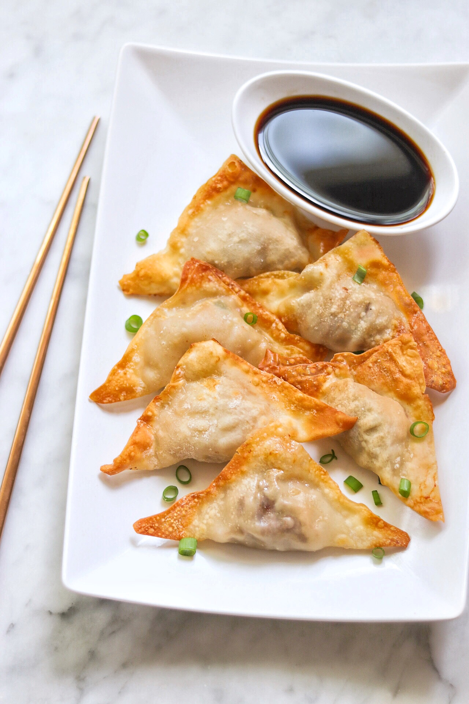

Making Wontons

Description
Boiled Wontons is something I started getting into because of Arleen Joy the one and only
nice quick meal to eat to keep you full and ready for a couple of hours.
Ingredients
- Water in a Pot
- The Wontons themselves
- Any Sauce you would like to dip the Wontons in
Steps
- Boil Water in the Pot
- Add the Amount you would like to put in, into the pot
- Keep Checking the Wontons from time to time
- Remove if Wontons have started to chance color and the inside looks cooked
- Enjoy this quick and great meal
Home Page